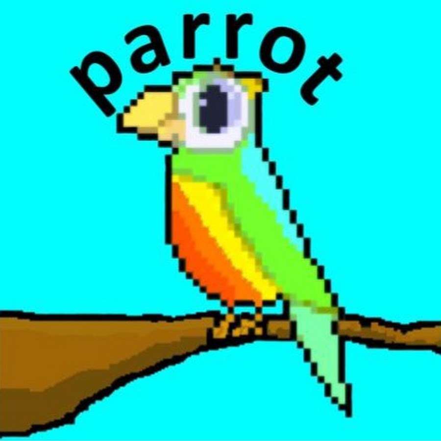
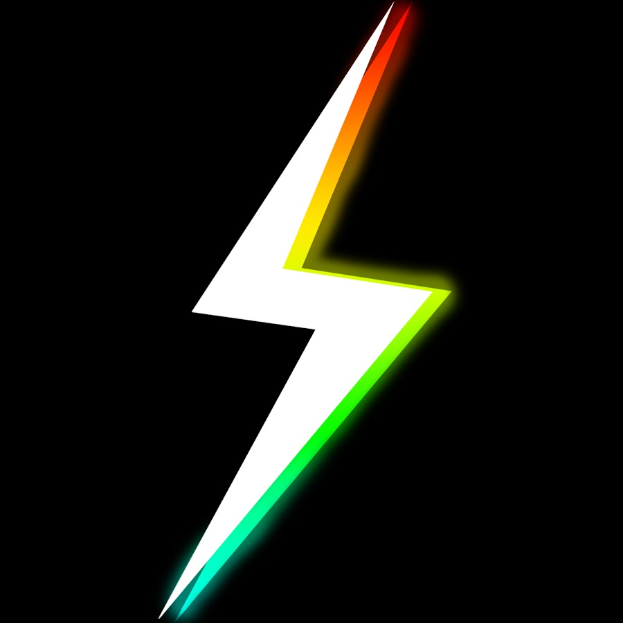
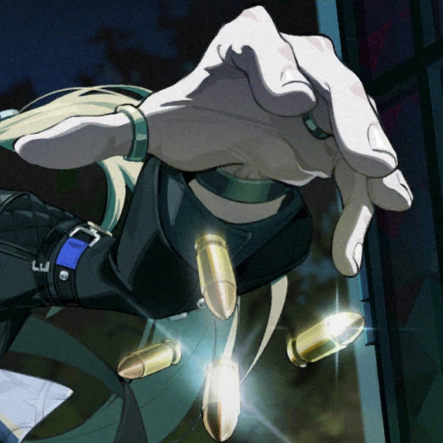

// PROTAGONIST ARCHIVES
傳奇主角個人全檔案
深入四位主角各自的人生視角：從他們的背景動機、完整紀元旅程、意外獲得的伺服器代碼神器，到所有核心影片的逐集深度解析。
這不是普通的 Minecraft 生存伺服器，而是一場由四位傳奇主角交織出的宏大史詩。 本站 100% 嚴格專注於 Unstable SMP（Unstable Universe）官方主線劇情與影片，深入探索四大主角命運交鋒、全集影片解說、意外挖掘到的禁忌神裝，並體驗內建互動決策遊戲！



深入四位主角各自的人生視角：從他們的背景動機、完整紀元旅程、意外獲得的伺服器代碼神器，到所有核心影片的逐集深度解析。
在同一個伺服器大事件中，這四位主角分別在做什麼？透過矩陣視角，直觀見證他們的命運如何交錯、對立與結盟。
完全免伺服器、純前端運行的互動決策文字 RPG！選擇扮演 Parrot、Wemmbu、Spoke 或 FlameFrags，動用他們身上的意外神器，改寫伺服器歷史命運！
為什麼 Unstable SMP 能夠在 Minecraft 社群掀起巨大轟動？解析這個宇宙背後的核心機制與哲學。
與傳統生存不同，Unstable 將伺服器的「不穩定性（Unstable）」直接作為世界觀的核心設定。非法的 NBT 裝備、複製漏洞、崩潰重置、甚至被抹除的幽靈代碼，都是角色爭奪力量的合法武器。
沒有單一主角能看清整個世界的全貌。Parrot 追尋真相、Wemmbu 爭奪力量、Spoke 掀起混亂、FlameFrags 守護榮耀。唯有將四人的故事拼湊在一起，觀眾才能拼出這個伺服器背後的巨大迷局。
表面上是極限硬核環境，但真正致命的從來不是苦力怕或飢餓，而是政治腐敗、黑手黨地下洗錢、偽善帝國的背叛，以及面對權力時個人內心的扭曲與救贖。